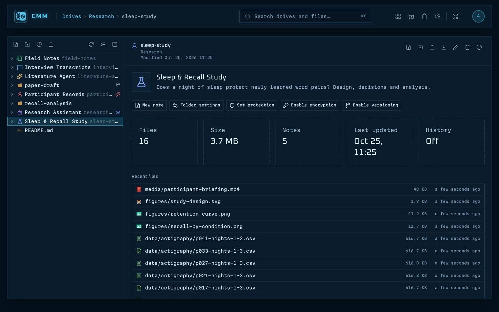

Memory folders
Turn any folder into a memory
Give a folder a name, a colour and a description, or start one from a template: LLM persona, project knowledge or agent scratchpad.
- An overview with size, recent files and quick actions
- A card on the Drives page, even for memories on a plugged-in drive
- View-only and locked folders, so an agent can't change them
